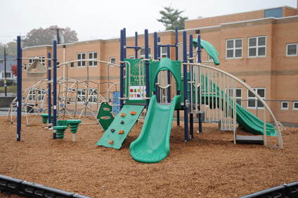

Prof. Chon Lintakoon
Department of Management Information Systems
Rutgers Business School
Rutgers University - Newark Campus
Email: chonl@business.rutgers.edu
Office Phone: 973-353-5033
Videos are a bit long.
Please watch just a bit and skip the rest of the video to save time.
Thank You!
The start of my journy called Life
The land of my mother, the land of my father, the land where dreams come to life.
The land called Bangladesh.
Identification: "Bangladesh" is a combination of the Bengali words, Bangla and Desh, meaning the country or land where the Bangla language is spoken. The country formerly was known as East Pakistan.
Location and Geography: Bangladesh straddles the Bay of Bengal in south Asia. To the west and north it is bounded by India; to the southeast, it borders Myanmar. The capital city, Dhaka, is near the point where those river systems meet. The land is suitable for rice cultivation.
In the north and the southeast the land is more hilly and dry, and tea is grown. The Chittagong Hill Tracts have extensive hardwood forests. The vast river delta area is home to the dominant plains culture.
Food in Daily Life: Rice and fish are the foundation of the diet; a day without a meal with rice is nearly inconceivable. Fish, meats, poultry, and vegetables are cooked in spicy curry ( torkari ) sauces that incorporate cumin, coriander, cloves, cinnamon, garlic, and other spices.
Basic Economy: With a per capita gross national product (GNP) of $350 and an overall GNP of $44 billion, Bangladesh is one of the poorest countries in the world. The only significant natural resource is natural gas.
Marriage: Marriage is almost always an arranged affair and takes place when the parents, particularly the father, decide that a child should be married. Men marry typically around age twenty-five or older, and women marry between ages fifteen and twenty; thus the husband is usually at least ten years older than the wife.
Infant Care: Most women give birth in their natal households, to which they return when childbirth is near. A husband is sent a message when the child is born. Five or seven days after the birth the husband and his close male relatives visit the newborn, and a feast and ritual haircutting take place.
Child Rearing and Education: Children are raised within the extended family and learn early that individual desires are secondary to the needs of the family group. Following orders is expected on the basis of age; an adult or older child's commands must be obeyed as a sign of respect. Child care falls primarily to household women and their daughters. Boys have more latitude for movement outside the household.
Higher Education. Great value is placed on higher education, and those who have university degrees and professional qualifications are accorded high status. In rural areas the opportunities for individuals with such experience are limited; thus, most educated people are concentrated in urban areas.
Religious Beliefs: The symbols and sounds of Islam, such as the call to prayer, punctuate daily life. Bangladeshis conceptualize themselves and others fundamentally through their religious heritage. For example, the nationality of foreigners is considered secondary to their religious identity.
Rituals and Holy Places. The primary Islamic holidays in Bangladesh include: Eid-ul-Azha (the tenth day of the Muslim month Zilhaj ), in which a goat or cow is sacrificed in honor of Allah; Shob-i-Barat (the fourteenth or fifteenth day of Shaban ), when Allah records an individual's future for the rest of the year; Ramadan (the month Ramzan ), a month-long period of fasting between dawn and dusk; Eid-ul-Fitr (the first day of the month Shawal, following the end of Ramzan ), characterized by alms giving to the poor; and Shob-i-Meraz (the twenty-seventh day of Rajab ), which commemorates the night when Mohammed ascended to heaven. Islamic holidays are publicly celebrated in afternoon prayers at mosques and outdoor open areas, where many men assemble and move through their prayers in unison.
Death and the Afterlife. Muslims believe that after death the soul is judged and moves to heaven or hell. Funerals require that the body be washed, the nostrils and ears be plugged with cotton or cloth, and the body be wrapped in a white shroud.
My name is Shakib Ali an I was born is a small village deep within bangladesh. I was born on May, 25 2002 as the eldest child of my family. We lived in a big house sourrounded by a small jungle and had a lake in front of the house as well as a lake in the back of the house. It was pretty dangerout to live here because if for some reason we got attacked getting help would be a problem because no one was around. Also the small jungle made it so dangerous snakes would crawl in house at night and you wouldent even know.
But years passed and I managed to pass all those obstacles in my way. And before I knew it it was 2009, our visa to the US was finally done and it was time to move. And I knew a new country meant new struggle because that just is the nature of life.
I have faced so many struggles that forced me to relinquish what I always wanted to do in my life, but it shaped me into a better and stronger person than before. It hurts when you leave your homeland to start a new life in a new country. It hurts when you leave your loved ones, to live your life in a country that you have no idea what the future holds for you. But there is always greatness and rewards waiting for you even if you think there isn’t one. Sometimes a simple decision can change your life, but you just have to have faith in yourself and hope for the best. So I began to pray and hoped that I could start a new life here in the United States.

After a long journey to American we finally setteled down in Paterson NJ. At first it didnt seem much it looked broken down and there was a lot of crimes going on here.
We were scared at the beginning and decided to stay indoors most of the time so nothing bad will happen and we did until school started. I went to school 5 which is a big public elementray school located in paterson NJ where I began to learn about the history of the US and the city we lived in.
We also learned how lucky we are the there is a national historic location right behind our school.
After learning more we began to over look all the crimes and bad things and decided to think on the positive side.
Couple years passed and I entered high school in Wayne NJ called Passaic County Technical Institute.
Soon after graduating I started work at T-mobile as a mobile expert and trying to expand my knowledge as much as possible.
Couple months later I enrolled in Rutgers Newark to persue my dream as a finance major.


FAV SONG
Click on the image to see more


Finance/Management Info Systems
Rutgers University
Department of Management Information Systems
Rutgers Business School
Rutgers University - Newark Campus
Email: chonl@business.rutgers.edu
Office Phone: 973-353-5033
Address: 195 University Ave, Newark, NJ 07102
Phone: (973) 353-1766